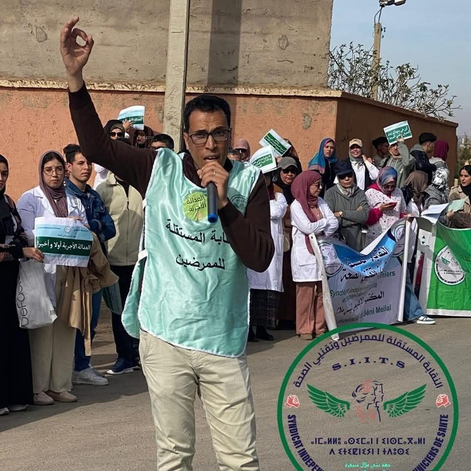

وزير الصحة يكذب… ونحن نصحح | عبد اللطيف أهنوش

بقلم: عبد اللطيف أهنوش، عضو المكتب الوطني والكاتب الجهوي للنقابة بجهة بني ملال خنيفرة
يطل علينا وزير الصحة والحماية الاجتماعية الجديد، عبر منابر إعلامية متعددة، بتصريحات غير مسؤولة ومجافية للحقيقة، يزعم من خلالها إحداث 8000 منصب مالي لفائدة الممرضين وإقرار زيادة قدرها 1800 درهم في أجورهم.
وأمام هذا التضليل الممنهج، فإننا بصفتنا عضواً بالمكتب الوطني للنقابة، نضع الرأي العام الوطني والشغيلة التمريضية أمام الحقيقة الكاملة، ونؤكد ما يلي:
• فشل الحوار وتعثر الاتفاقات السابقة: نؤكد أن جولة الحوار التي جمعتنا بالوزارة يوم الجمعة الماضي كانت نتائجها صفرية بامتياز، ولم تتسم بأي جدية، ولم يتم خلالها التطرق أو التلميح بتاتاً لمثل هذه الأرقام. بل الأكثر من ذلك، فإن اتفاق 23 يوليوز، الذي نطالب بتنزيله الفوري، لا يزال يراوح مكانه وأغلب بنوده لا تزال عالقة دون تنفيذ.
• حقيقة الزيادة في الأجور: بخصوص الحديث عن زيادة 1800 درهم في أجور الممرضين، نؤكد أن الأمر لا يعدو أن يكون كذباً وبهتاناً ومحاولة لذر الرماد في العيون واستغفال الممرضين والرأي العام، ولا أساس له من الصحة على أرض الواقع.
• مغالطة المناصب المالية (8000 منصب): بالعودة إلى مسودة مشروع قانون المالية، يتضح أن العدد الإجمالي للمناصب المخصصة لقطاع الصحة برمته لا يتجاوز 5400 منصب مالي، وهي موزعة على جميع الفئات والهيئات (من أطباء، وإداريين، ومهندسين، وتقنيين، وممرضين)، مما ينفي قطعاً وجود 8000 منصب مالي خاص بالممرضين.
• إشكالية المجموعات الصحية الترابية ومركزية المناصب: قد يحاول البعض تبرير هذا التناقض بالقول إن الرقم المعلن يشمل مناصب المجموعات الصحية الترابية (GST). وهنا نجدد التأكيد على أن هذا الطرح يعيدنا إلى جوهر معركتنا النضالية وإشكالية مركزية المناصب المالية، ويزيد من تشبثنا بمطلبنا العادل والمشروع بالحفاظ على مركزية الأجور والمناصب المالية وضمان حقوق الشغيلة.
• سجل حافل بالوعود الكاذبة: ليست هذه المرة الأولى التي تخلف فيها الوزارة وعودها؛ فقد سبق أن وعدت الخريجين بتوفير 3000 منصب مالي خلال شهر نونبر، ليتفاجأ الجميع عند صدور إعلانات مباريات التوظيف (المقررة يوم 22 نونبر) بأن العدد الفعلي للمناصب المعلنة لا يتجاوز 2000 منصب فقط.
إننا نحمل وزير الصحة والحماية الاجتماعية كامل المسؤولية عن هذا التضليل الإعلامي، وندعوه إلى الكف عن تسويق الأوهام، والانكباب بجدية ومسؤولية على معالجة الملفات العالقة وتنفيذ الالتزامات الموقعة، صوناً لكرامة الشغيلة التمريضية وضماناً للسلم الاجتماعي بالقطاع.
فتح في تطبيق النقابة